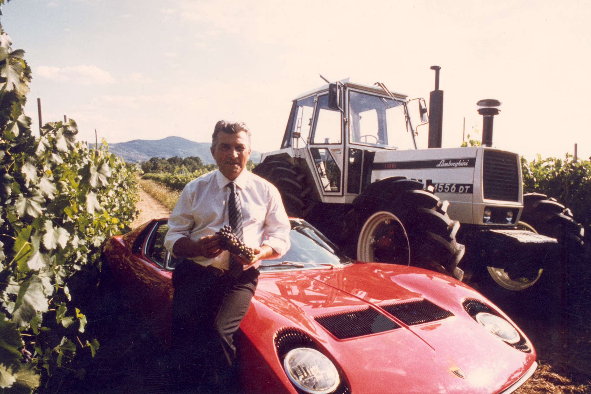
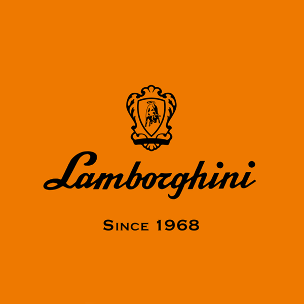

Ferruccio Lamborghini
Per via di questo slogan rimasi sempre superficiale e mi accontentai di quello che stavo facendo, trattori efficaci a buon prezzo e con delle ottime prestazioni. Lasciai l'azienda nel 1973 e mi trasferii in campagna dove creai un azienda di vini  chiaramente utilizzando i miei trattori come macchinari di lavoro, si chiamava "Tenuta Lamborghini" . Il vino non mi fruttava tanto quanto i trattori ma mi accontentai ugualmente di quello che facevo.